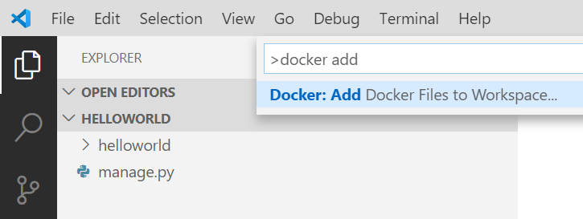
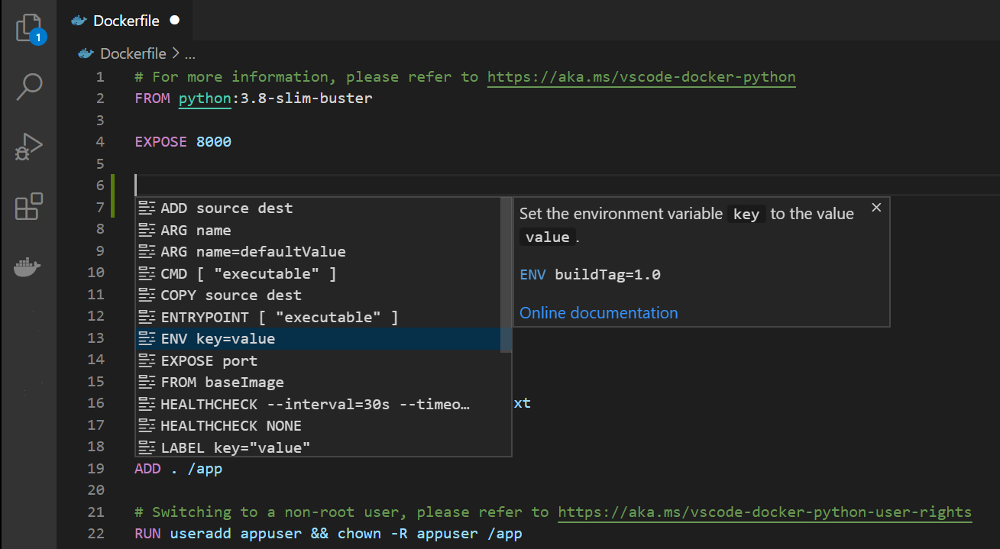
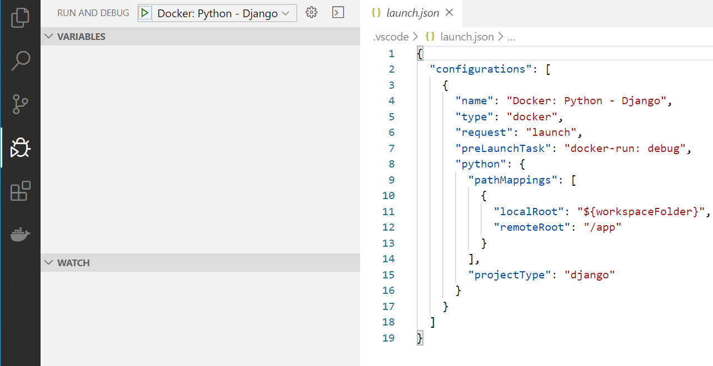
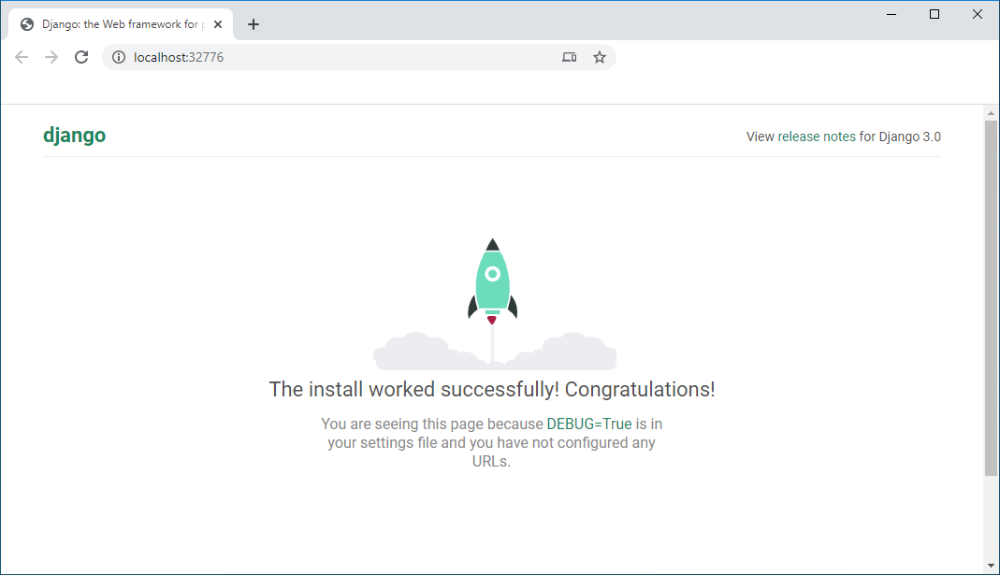
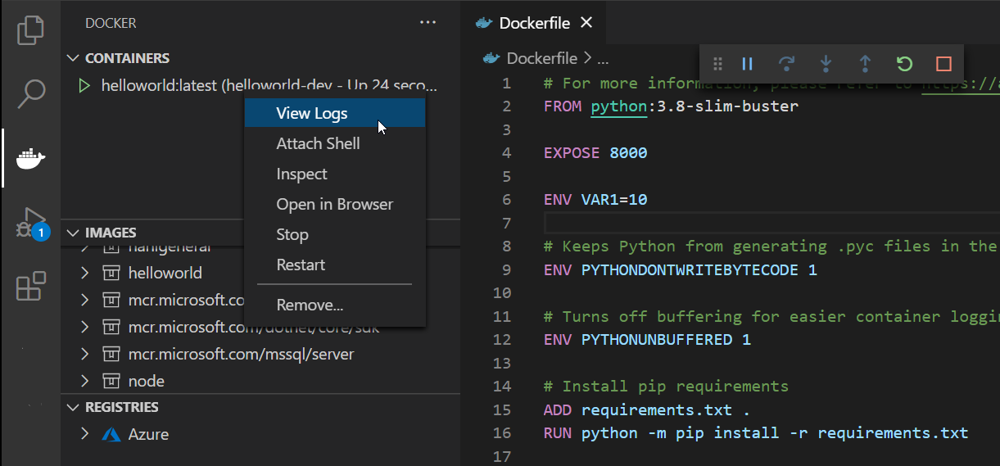

Python in a container
In this guide you will learn how to:
- Create a
Dockerfilefile describing a simple Python container. - Build, run, and verify the functionality of a Django, Flask, or General Python app.
- Debug the app running in a container.
Prerequisites
- Docker Desktop and the VS Code Docker extension must be installed as described in the overview.
- For Python development, complete all Getting started with Python steps
- A runnable Python application
Create a Python project
If you don't have a Python project already, follow these commands sequentially from the terminal:
pip install django
django-admin startproject helloworld
cd helloworld
code .
If you want to containerize a complete Django or Flask web app, you can use one of the following samples:
python-sample-vscode-django-tutorial, which is the result of following the Django Tutorial
python-sample-vscode-flask-tutorial, which is the result of following the Flask Tutorial
After verifying your app runs properly, you can now Dockerize your application.
Add Docker files to the project
Open the project folder in VS Code.
Open the Command Palette (
kb(workbench.action.showCommands)) and use the Docker: Add Docker Files to Workspace... command:
When the prompt appears, select Python: Django, Python: Flask, or Python: General as the app type. For this tutorial, we will select Python: Django.
Enter the relative path to the app's entry point. This excludes the workspace folder you start from. According to official Django documentation, this path is commonly
manage.py(root folder) orsubfolder_name/manage.py. According to official Flask documentation, this is the path to where you create your Flask instance.Tip: You may also enter the path to a folder name as long as this folder includes a
__main__.pyfile.If Python: Django or Python: Flask was selected, specify app port for local development. Django defaults to port 8000, while Flask defaults to port 5000; however, any unused port will work. We recommend selecting port 1024 or above to mitigate security concerns from running as a root user.
Select either Yes or No when prompted to include Docker Compose files. If you select Yes, you will need to verify the path to your
wsgi.pyfile in theDockerfileto run the Compose Up command successfully. Compose is typically used when running multiple containers at once.With all of this information, the Docker extension creates the following files:
A
Dockerfile. To learn more about IntelliSense in this file, refer to the overview.A
.dockerignorefile to reduce the image size by excluding files and folders that aren't needed such as.git,.vscode, and__pycache__.If Docker Compose was selected, a
docker-compose.ymlanddocker-compose.debug.ymlfile.If one does not already exist, a
requirements.txtfile for capturing all app dependencies.
Important note: To use our setup, the Python framework (Django/Flask) and Gunicorn must be included in the
requirements.txtfile. If the virtual environment/host machine already has these prerequisites installed and is supposed to be identical to the container environment, ensure app dependencies are ported over by runningpip freeze > requirements.txtin the terminal. This will overwrite your currentrequirements.txtfile.
Add an environment variable to the image
The Docker Extension helps you author Dockerfiles by using IntelliSense to provide auto-completions and contextual help. To see this feature in action:
Open the
Dockerfile.Underneath the
EXPOSEstatement, typekb(editor.action.triggerSuggest)to trigger IntelliSense and scroll toENV.
Press
kbstyle(Tab)orkbstyle(Enter)to complete the statement, then set thekeyto VAR1 and thevalueto 10.
Gunicorn modifications for Django/Flask apps
To give Python Web Developers a great starting point, we chose to use Gunicorn as the default web server. Since it is referenced in the default Dockerfile, it is included as a dependency in the requirements.txt file.
Note: To use Gunicorn as your web server, it must be included in the
requirements.txtfile as an app dependency. It does not need to be installed in your virtual environment/host machine. The Gunicorn entry point is overridden locally if your app is run with Python: Django or Python: Flask.
Django apps
To use Gunicorn, it must bind to an application callable (what the application server uses to communicate with your code) as an entry point. This callable is declared in the wsgi.py file of a Django application. To accomplish this binding, the final line in the Dockerfile says:
CMD ["gunicorn", "--bind", "0.0.0.0:8000", "{workspace_folder_name}.wsgi"]`
If your project does not follow Django's default project structure (that is, a workspace folder and a wsgi.py file within a subfolder named the same as the workspace) you must overwrite the Gunicorn entry point in the Dockerfile to locate the correct wsgi.py file.
Tip: If your
wsgi.pyfile is in the root folder, the final argument in the command above will be"wsgi". Within subfolders, the argument would be"subfolder1_name.subfolder2_name.wsgi".
Flask apps
To use Gunicorn, it must bind to an application callable (what the application server uses to communicate with your code) as an entry point. This callable corresponds with the file location and variable name of your created Flask instance. According to official Flask Documentation, users generally create a Flask instance in the main module or in the __init__.py file of their package in this manner:
from flask import Flask
app = Flask(__name__) # Flask instance named app
To accomplish this binding, the final line in the Dockerfile says:
CMD ["gunicorn", "--bind", "0.0.0.0:5000", "{subfolder}.{module_file}:app"]
During the Docker: Add Docker Files to Workspace... command, you configure the path to the Flask instance, however, the Docker extension assumes your Flask instance variable is named app. If this is not the case, you must change the variable name in the Dockerfile.
Tip: If your main module was in the root folder as a file named
main.pyand had a Flask instance variable was namedmyapp, the final argument in the command above will be"main:myapp". Within subfolders, the argument would be"subfolder1_name.subfolder2_name.main:myapp".
Build, run, and debug the container
The Docker: Add Docker Files to Workspace... command automatically creates a Docker launch configuration to build and run your container in debug mode. To debug your Python app container:
Navigate to the
manage.pyfile and set a breakpoint on this line:os.environ.setdefault('DJANGO_SETTINGS_MODULE', 'helloworld.settings')Note: If you have created an app project as shown in the Create a Django app section of the Django tutorial, you can also set a breakpoint in
views.pyor wherever you choose.Navigate to Run and Debug and select Docker: Python - Django.

Start debugging using the
kb(workbench.action.debug.start)key.- The Docker image builds.
- The Docker container runs.
- The python debugger stops at the breakpoint in
manage.py.
Step over this line once.
Navigate to the Debug Console and type
os.environ["DJANGO_SETTINGS_MODULE"]Once you view the output, press continue.
The Docker extension will launch your browser to a randomly mapped port:

Tip: To modify your Docker build settings, such as changing the image tag, navigate to
.vscode -> tasks.jsonunder thedockerBuildattribute in thedocker-buildtask. Use IntelliSense within the file (kb(editor.action.triggerSuggest)) to display all other valid directives.
Use the Docker Explorer
The Docker Explorer provides an interactive experience to examine and manage Docker assets such as containers, images, and so on. To see an example:
Navigate to the Docker Explorer.
In the Containers tab, right-click on your container and choose View Logs.

The output will be displayed in the terminal.
Next steps
You're done! Now that your container is ready, you may want to:
- Debug with Docker Compose
- Customize how you debug Python apps in a container
- Customize your Docker build and run tasks
- Push your Django image to an Azure Container Registry
- Create a container registry using the Azure portal
- Deploy a containerized app to Azure App Service
- Learn about using Docker Compose